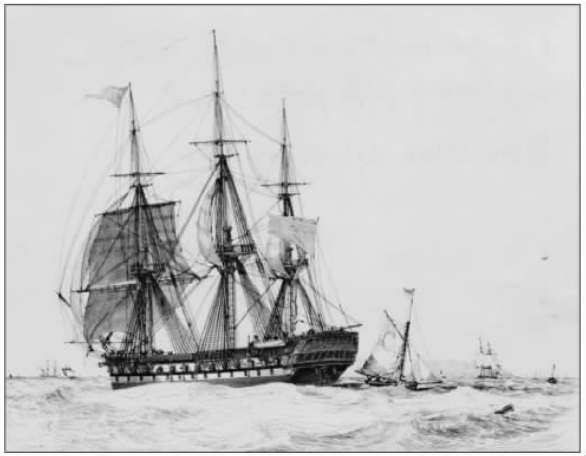
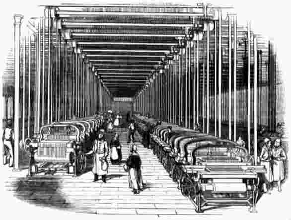

1601年4月，英国东印度公司派遣第一支远航船队前往东印度。经过18个月的航行，四艘船只——“升天号”、“猛龙号”、“赫克托耳号”、“苏珊号”——从苏门答腊和爪哇返回，带回的货物以胡椒为主。此次冒险的成功促使同一批船队于1604年3月离开伦敦，开始第二次远航。船队返回时，“赫克托耳号”和“苏珊号”率先启程，但“苏珊号”在海上失事，而“赫克托耳号”则被“升天号”和“猛龙号”救起，当时它正漂流在南非附近的海上，多数水手已经死亡。三艘船于1606年5月回到英格兰，带回了胡椒、丁香、肉豆蔻等货物。投资于这两次航行的股东们从中获得了相当于投资额95%的利润。
1607年，船队的第三次远航同样取得成功，但1608年“升天号”和“联合号”的第四次航行却是一次彻底的灾难。“升天号”抵达印度的西海岸，却在那里因为它那“傲慢且固执的船长”的错误决定而失事。他忽视了当地人关于浅水区的警告，导致船只搁浅。“联合号”在马达加斯加的一个港口停靠，在那里船员们遭遇埋伏，船长被杀，不过“联合号”依然抵达苏门答腊并满载了货物。但在返回英格兰的途中，“联合号”在法国布列塔尼附近的海岸失事。投资者在这次航行中损失了全部资本。
资本主义本质上就是期望获取利润的投资行为。通过类似的远距离贸易，投资者可能获得巨额利润，但同时也要承担相当大的风险。利润完全来自稀缺性和距离。欧洲和香料原产地之间胡椒价格的巨大差异造就了利润，巨额利润使得人们无视冒险的成本。真正重要的是货物是否能运回欧洲，不过市场条件也很重要，因为大型船队的突然回归可能会压低价格。如果贸易的高额利润吸引了太多人参与，市场也可能会变得饱和。胡椒的过量供应迫使东印度公司采取多元化经营，同时贩卖胡椒之外的香料和其他产品，比如靛蓝染料。
此类贸易需要大量资本。首先必须造一艘大船，如“东印度人号”（此类商船大都被如此命名），船上配备相应设施，并装上火炮以对付荷兰和葡萄牙的竞争对手。当它远航归来时，还得维修。公司位于布莱克沃尔和德特福德的船厂需要大笔资金支持。在当地，船厂是主要的劳动雇佣者。远航的船只还要捎上用于购买香料的金条和货物，装上弹药以及备足大批船员所需的食物和饮水，这也需要资本。在东印度公司第三次远航的时候，“猛龙号”有150名船员，“赫克托耳号”100名，“升天号”30名，总共需要预备280人的饮食，至少在航程的初始阶段是如此。需要大批船员的原因之一是确保在航程中发生危险造成人员伤亡后，有足够的水手驾驶船只返航。
英国东印度公司的资本主要来自伦敦的富商，他们掌控并管理资本的使用。资本的另一来源是贵族及其附庸，公司欢迎这些人的加入，因为他们在宫廷中很有影响力。公司的特权取决于王室的态度。外国资本同样参与其中，主要来自被荷兰东印度公司排除在外的荷兰商人。这些商人还是荷兰公司活动情报的有效来源。

图1“东印度人号”，1829年
东印度公司的前12次航行都是分别募集资金的，每次航行的资本属于一次性投资，所获利润根据商业传统在股东间分配。但是，对于长途贸易的投资来说，这种方式极具风险，因为资本将前往遥远的未知地区，在很长一段时间内处于不确定状态。每次航行中派遣多艘船只可以分散风险，但整个船队也可能全部遇难，就像1608年的那次远航。东印度公司转而采取将风险分散到几次航行里去的融资办法，于是公司变为成熟的联合股份公司。自1657年之后，公司所获得的投资改为连续性的资本投入，与特定的航行无关。1688年，东印度公司股票在伦敦股票交易所上市。
东印度公司还通过垄断措施减少风险。和它的国外竞争对手一样，英国东印度公司与政府联系紧密，后者给予它东方商品的进口垄断权以及使用金条作为支付手段的权力。作为回报，一直缺乏资金的政府对公司的大宗商品及贵重物品进口收取关税以资岁收。东印度公司当然也要面对竞争，但主要是国际竞争，即英国人、荷兰人、葡萄牙人在印度周边地区的竞争。在三个国家的本国范围内，竞争被尽可能地消除殆尽。被排除在外的其他人一直努力介入贸易，而政府给予东印度公司的关键特权之一就是对“闯入者”采取行动。
通过大量购入股票和抑制销售可以操控市场。17世纪阿姆斯特丹的商人尤其善于此类操作，他们忙于达成对各类商品的垄断，不仅是香料，还包括瑞典的铜、鲸鱼制品、意大利丝绸、糖、香精和硝石（火药的成分之一）。要做到这一点，巨大的存储仓库是关键。费尔南多·布罗代尔评论道，荷兰商人的仓库比巨舰更大、更昂贵。他们可能贮存大量谷物，足够整个国家吃上10到12年。这不仅是抑制商品供应以抬高价格的问题，因为大量存储也使得荷兰能突然将货物倾销到整个欧洲市场，从而打垮外国竞争者。
这当然是资本主义，因为远途贸易需要以获取巨额利润为目的的大笔投资，但是这显然并不是自由市场资本主义。获取高额利润的秘密在于通过这样或那样的方式确保垄断，排斥竞争对手，并尽一切可能控制市场。因为利润是通过交易稀缺商品而不是合理化生产的方式取得的，商业资本主义对于社会的影响有限。当时欧洲的大多数居民过着自己的生活，资本所有者的商业活动并没有影响他们。
18世纪80年代，两个苏格兰人，詹姆斯·麦康奈尔和约翰·肯尼迪从家乡一路向南到达兰开夏郡，加入当地的棉纺织业，成为学徒工。他们积累了一定经验并从纺织机械生产中赚了一笔钱，随后两人在1795年建立了自己的公司，初始资本为1，770英镑。他们很快从纺纱业务中获取了可观的利润，1799年和1800年，公司的资本回报率超过30%。他们迅速累积资本。1800年，他们的资本上升到22，000英镑；1810年，进一步上升到88，000英镑。到1820年，公司拥有三家纱厂，并且成为了全球棉纺之都曼彻斯特精品棉纺织业的龙头老大。
然而，棉纺织业迅速成为激烈竞争的行业，利润无法维持在19世纪初的高水平。很大程度上，这是因为高利润导致行业扩张，吸引了众多新企业加入。到1819年，已经有344家纱厂。到1839年，这个数字增加到1，815家。技术进步使得19世纪30年代的生产率出现大幅度提升，竞争促使公司投入大量资金开发新机械。这一时期建造的纱厂面积更大，可容纳40，000台纺锤，而之前的工厂只能容纳大约4，500台纺锤。19世纪30年代，厂房和机械的巨额投资成本，加上生产率提高后对棉线价格的挤压，使得整个行业的利润率处于较低水平。
利润最终取决于将棉花原料加工成纱线的工人。麦康奈尔和肯尼迪的员工人数从1802年的312人增加到19世纪30年代的约1，500人。其中多数为廉价的童工，经常出现雇用的劳工中近半数不满16岁的情况。1819年，有100名儿童不满10岁，甚至有7岁儿童，他们必须从早上6点开始工作，直到晚上7点半。
除了新厂房和新机械偶尔产生的高成本，公司的主要开支是工资。1811年，公司的年度工资支出超过35，000英镑。到19世纪30年代中期，此项支出超过48，000英镑。通过压低工资水平，并用技术一般但相对廉价的劳工替代技术熟练的工人（自动机械的发明使其成为可能），公司达到了尽可能压缩工资开销的目的。棉纺织业一再出现的不稳定状况，导致市场需求周期性暴跌，雇主不得不降低酬劳并压缩工作时间以求继续生存。

图2动力织布机在一家19世纪的纱厂中占主导地位
随着工业资本主义的发展，工资引发的劳资纠纷越来越有组织性。纺织工人通过工会来保护自身利益，反对削减工资。他们的组织起初限于地方，随后扩展到区域，并最终成为全国性组织。从1810年到1818年，再到1830年，有组织的罢工越来越多，但都被得到政府支持的雇主所挫败，政府拘捕罢工者并将工会领袖关入监狱。雇主们建立了自己的联合会，以便将工会激进分子“列入黑名单”，采取“停工以迫使工人妥协”的办法回应罢工，并且相互提供资金支持。不过纺织工人所采取的强力行动看起来颇为见效，尽管纺织业利润率下降，雇主们极力削减工资，但工资依然保持稳定。
对劳动者的剥削不仅限于压低工资，还涉及对劳动者的规训。要想将开支降到最低，工业资本主义需要有规律的、持续的工作。昂贵的机械必须不间断地运转。懒散、酗酒，甚至连闲逛和交谈都被禁止。纱厂在招募员工时遇到麻烦，因为人们就是不喜欢长时间、不间断的劳动班次和严密的监管。雇主们不得不寻找达成规训的办法，对于首批工业劳动者来说，这种规训极其陌生。雇主们通常采用体罚（针对童工）、罚款或威胁开除等粗放且消极的制裁措施，但有些人则采取更为复杂的、以道德说教为主的方式来控制工人。
罗伯特·欧文在他位于新拉纳克的工厂引入了“无声的监督者”机制。每个工人有一段木头，木头的侧面如果涂上黑色，表示工作糟糕，蓝色表示不好不坏，黄色表示好，白色则表示优秀。涂上颜色的那一面被转到正前方，让所有人都能看到，以便不断提醒该工人前一天所完成工作的质量。每个部门都有一本“品质登记簿”，记录每个工人每天的颜色评价。规训不仅关系到工厂，因为欧文还控制了社区。他派出街道巡逻队搜寻醉酒者，并在第二天早晨对其进行处罚。他坚持卫生清洁，制定了清扫街道和房屋的详尽要求。他在冬天甚至还实施宵禁，要求所有人在晚上10点半之后不得出门。
正如E.P.汤普森所强调的那样，经过规训的工作是有规律的、遵循时间安排的工作。它意味着每天早起，按时开始工作，到了规定的时间点停下来休息，休息时间的长度也有明确规定。雇主们一直反对工人们一项由来已久的请假惯例，即以额外的“圣徒日”、“圣周一”，甚至包括“圣周二”为借口旷工，以便从周末的宿醉中恢复。时间变成了战场，一些无耻的雇主甚至在早晨将钟表的时间向前拨，到了晚上又拨回来。有许多故事都提到，雇主把工人的手表摘下，这样他们对时间的控制就不会遭到质疑。随着工业革命的进行，计时器的拥有率也迅速增加，这一点具有重要意义。在18世纪末，政府甚至竭力想对钟表的所有权收税。
工业资本主义不仅创造了工作，它同时也创造了现代意义上的“休闲”。乍看起来，这种说法令人吃惊，因为早期的纱厂雇主想要尽可能地延长机器运转时间，迫使工人长时间工作。但是，通过在工作时间要求工人持续工作，排除工作之外的活动，雇主将休闲和工作分离开来。有些雇主在工厂关闭期间设置长假，从而明确划分工作与休闲，因为这样做胜过任由零星休假干扰工作进度。作为工作之外的时间，“休闲”包括假期、周末、夜晚等多种形式，它是规训后的、有约束的工作时间的产物，而正是资本主义生产造成了这样的工作时间。工人们随即希望得到更多的休闲，休闲时间的延长得益于工会运动，后者肇始于棉纺织业，最终政府通过新法令限制了工作时间，并给予工人休假权。
在另一层意义上，休闲也是资本主义的产物，即休闲的商业化。这不再意味着参与传统的体育和娱乐活动。工人们开始付钱换取由资本主义企业组织的休闲活动。新的铁路公司提供价格低廉的短途旅行车票，兰开夏郡的纺织工人可以借此去布莱克浦度假。1841年，旅游业的先驱托马斯·库克组织了第一次旅行，运送人们坐火车从莱斯特到拉夫伯勒参加戒酒者的聚会。此时，组织人们大规模旅行去观看收费入场的体育比赛，特别是足球和赛马，成为了可能。这一变化的重要意义无法估量，因为一批全新的、对休闲市场进行利用和开发的产业开始涌现，这一市场即将成为消费者需求、就业和利润的重要源头。
资本主义生产改变了人们的工作和休闲生活。以获利为目的的资本投资驱动着工业革命，而飞速的技术进步则以惊人的速度提高着生产率。但机器不可能自行运作，在创造利润的过程中起到核心作用的是雇佣劳动力。工资是雇主的主要开支，因而也成为了资本所有者与“劳动力”所有者之间的斗争焦点。按照卡尔·马克思的说法，工人所拥有的只是自身的“劳动力”，即通过体力劳动获取金钱的能力。工人们集中于工厂和手工作坊，在那里他们不得不在监工们的眼皮底下连续地、有纪律地工作。但与此同时，他们也有机会通过工会将自身组织起来，成为一个整体。与工作无关的活动被排斥在工作时间之外，成为休闲时间的内容。日常生活至此被明确划分为工作与休闲两部分。然而，雇佣劳动的形式也意味着工人们有钱用于休闲生活的开销。休闲的商业化创造了新的产业，后者又进一步推动了资本主义生产的扩张。
1995年2月23日，周四，巴林证券新加坡分部的经理尼克·李森眼看着日经指数，即日本股票市场综合指数，暴跌了330点。在那一天里，他的交易操作使得巴林银行损失了1.43亿英镑，不过只有他一个人知道所发生的一切。这部分损失仅仅只是开头，李森一共向上司隐瞒了将近4.7亿英镑的损失。他知道事情已经败露，带着妻子慌忙逃窜到了婆罗洲北部海岸的一处隐居点。与此同时，巴林银行的经理们对于在新加坡凭空消失的巨额资金困惑不已，他们竭力寻找李森。第二天早晨，人们发现巴林兄弟银行，伦敦地区历史最悠久的商业银行，遭受了巨大的损失，它事实上已经破产。李森努力想回到英格兰，但他在法兰克福遭到拘捕，以违反金融监管的罪名被引渡回新加坡，并被判处六年半的监禁。
李森经手交易的是“金融衍生产品”。这些产品是复杂的金融工具，它们的价值衍生 自其他物品，如股票、债券、货币或者石油、咖啡等真实商品的价值。举例来说，期货 是以现有 价格在将来某个时间点购入股票、债券、货币或商品的合约。如果你认定股票价格将上升，你可以买该股票的三个月期货。三个月期满之后，你按照当初约定的价格买入股票，然后以当时的高价位卖出，从而赚取利润。你也可以买期权 ，即你并非一定要履行未来的交易，你可以在此后决定是否继续完成交易。
购买期货可以起到一个非常重要的作用，因为它减少了不确定性，从而也减少了风险。如果谷物的价格很高，但收获却还需要等待一段时间，农场主可以和商人进行交易，约定以现有价格在三个月后出售谷物，从而锁定现行价位。但是，购买期货也可以完全是一种投机行为，通过价格变动来获取利润。李森的此类金融期货交易或多或少是一种基于一定信息基础上的、针对未来价格变动的风险投资行为。这就是苏珊·斯特兰奇所说的“赌场资本主义”。
另一种生钱方式是“套利”，即利用不同市场间由于技术原因出现的价格微差牟利。如果你能够发现这些价格差异，迅速计算出它们的价值，并且快速调拨大笔资金，你就能通过这种方式获取巨额利润。李森发现他能够利用大阪和新加坡两地证券交易所的期货价格之间持续时间不到一分钟的细微差异获利。这类操作的风险很小，因为所获得的利润源自真实存在（尽管很短暂）的价格差异，因而可以计算清楚并即时兑现。
（a）上图为巴林银行的明星交易员尼克·李森，摄于1999年他从狱中被释放之后
（b）下图为尼克·李森加入公司时巴林银行的主席第七代阿什伯顿男爵
图3英国金融资本主义的新老面孔
那么，为什么李森会犯下如此大错？他的堕落历程开始于一个特殊的错误账户——88888号。李森创建该账户，本意是想处理非恶意的交易及账目上的错误。后来这个账户成为了他隐瞒损失的庇护所，他还让新加坡的“内勤部门”在不同账户之间进行非法的临时资金调动来掩盖累积下来的月底赤字。类似的操控欺骗了审计人员，他们本该早就发现所发生的一切。
88888号账户的存在使得李森敢于用巴林银行的资金进行投机。既然他的任何损失都能被掩盖，李森就可以冒险在期货市场上进行大胆投资，从而树立起投资高手的形象。他的损失可以通过后续交易来弥补，有一次李森几乎补上了所有亏损，但如果他就此关闭88888号账户，他将失去使他成为巴林银行明星交易员的法宝。最终，他的损失再次增加，并累积到难以挽回的地步，他已经无法再通过资金调动来掩盖巨额亏损。
此时，李森开始转而出售期权。与期货交易不同的是，期权能立即筹集到资金来掩盖88888号账户每月的亏损。李森一心针对期货价格变动进行投机，但东京股市的走向与他预期的正相反。随着损失的增加，他加大赌注，假装代表一位名叫菲利普的神秘客户售出更多、更具风险性的期权。神户大地震后，日经指数下跌，此时李森损失惨重，不得不通过大量购入期货，试图独力推动股市上扬。但下挫的压力显然过于强大，股市最终还是下跌。到目前为止，累积的损失和负债已经超过了巴林银行的总资本额。
为什么巴林银行会允许这一切发生呢？巴林银行是一家商业银行。1984年，巴林银行成立巴林证券公司，并介入证券交易。这次转变非常成功，到1989年，以日本股票为主的证券交易已经占到巴林银行利润的一半。巴林证券随即介入当时正成为投资时尚的衍生产品交易。1993年，巴林银行将自己的资本与巴林证券的资本合并，这一致命的决定拆除了原本能保护银行不受证券部门投资损失影响的“防火墙”。这一做法极其危险，因为巴林银行的高级经理们对于他们参与的新游戏知之甚少，同时银行没有建立起合适的管理架构，财务控制非常薄弱。在当今世界，金融行为纷繁错杂，欺诈始终是潜在的危险。巴林银行却违背了企业管理的黄金法则，竟然允许李森兼任交易员和新加坡“内勤部门”经理两个职位。要知道后者的职责就是审核交易并平衡账目。
表面看来，李森是一个非常成功的交易员，为巴林银行挣得了大量利润，因此银行给予他全面支持。讽刺的是，当巴林银行倒闭时，李森的上司们刚做出决定，要给予李森45万英镑的红利，以奖励他在1994年的交易行为。李森的交易操作从伦敦总部榨取了越来越多的资金，以致巴林银行不得不在全球范围内寻求贷款以弥补资金缺口，但他的上司们却以为他们在为明星交易员的赢利操作提供资金支持。李森之所以能如此长时间进行违规交易，不仅仅是因为金融市场的复杂性和巴林银行内部极其软弱的金融控制，还在于银行本身对于更多利润的渴求。
我们已经考察了资本主义三个截然不同的案例。这三个案例中的商业行为各不相同，但都涉及资本主义的本质特征，即以赢利为目的的投资。经济活动本身的性质并不重要，重要的是从中获利的可能性。的确，资本主义社会的典型特征就在于，几乎其中所有的经济活动都是由以获利为目的的资本投资所驱动的。
资本是用来投资以获取更多金钱的金钱。广义上，“资本”一词常用来指可用作投资的金钱，或者说，能够转成金钱形式用以投资的任何资产。因此，人们的住房常被看作他们的资本，因为他们可以通过出售或者抵押贷款将住房转换成资本。许多小型企业都是通过这种方式建立起来的。但是，要将资产转成资本需具备若干条件：资产所有权必须明确界定，资产价值可以测算，资产所有权可以转让，以及存在资产交易的市场。资本主义社会发展的一个标志性特征就是出现了能将各类资产转换成资本的制度。赫尔南多·德索托令人信服地提出，正是这些制度的缺失，特别是财产法的各种运作机制的缺失，造成了第三世界无法产生地方性的资本主义萌芽。在他看来，资产中所蕴含的巨大价值被冻结，无法转成资金并由企业家投入到生产中。
在真正的资本主义制度出现前就已经存在资本主义者。自远古以来，商人们一直通过投资可获利商品来攫取财富。正如我们在东印度公司的例子中所看到的，此类商业资本主义具备高度组织性，并取得了高额利润，但这样的经济活动只涉及当时整个社会经济体的很小一部分。大多数人的收入并非来自资本投资所支持的经济活动。在真正的资本主义制度中，不仅贸易需要资本投入，生产同样如此，于是整个经济变得依赖于资本投资。
资本主义生产的基础是以获取工资为目的的劳动。在资本所有者（他拥有马克思所说的“生产手段”）和出售劳动以换取工资的劳动者之间出现了明确界线与冲突。生产手段包括工作场所、机器设备和原材料。在资本主义社会出现之前，生产手段的所有者并非资本所有者，而是制造产品的手工匠人。工资（或报酬）是雇主为获得工人所出售的劳动所支付的价格。正如资本主义者愿意为任何能带来利润的活动进行投资，工人能够在任何支付劳动工资的经济活动中找到工作。
在资本主义社会中，资本和劳动两者都具有抽象性和流动性，因为两者都与具体的经济活动相分离，从而在原则上能被投入到任何可获得报酬的经济活动中。在现实生活中，资本所有者和工人双方的现有技术和经验以及双方的关系和依附状态限制了这样的流动性。但是，资本和劳动的潜在流动性是资本主义社会的特征之一，有了流动性，才有资本主义社会特有的活力。
雇佣劳动力既是自由的，又是非自由的。不同于在奴隶主逼迫之下进行劳动的奴隶，雇佣劳动者能自行决定是否工作，为谁工作。不同于封建社会中被封建主土地束缚的农奴，雇佣劳动者能自由流动，去任何地方寻找工作。但在另一方面，这些自由是虚幻的，因为在资本主义社会要想生存只有通过付出劳动来换取报酬，劳动者对于工作或雇主几乎没法选择。此外，雇佣劳动者受到雇主的严密控制，正如我们在纱厂的例子中看到的那样，资本主义生产意味着一种新型的、经过规训的持续工作。工人们变成了马克思所说的“工资奴隶”。
雇佣劳动对于生产和消费都具有重要意义。雇佣劳动者自身无法生产他们所需或想要消费的产品，只能通过购买获得产品，他们的消费需求激励了一大批新的资本主义企业进行生产。这不仅包括他们的食物、衣饰、个人物品，也包括他们的休闲活动。正如我们之前所看到的那样，资本主义生产迅速催生了以休闲的商业化为基础的全新产业。雇佣劳动所具备的双重角色使生产和消费之间得以产生动态交互作用，从而解释了资本主义生产为何能在条件合适时如此迅速地发展。
和商人一样，市场也不是什么新产物，但市场在资本主义社会中以一种全新的、更为抽象的方式处于核心地位。因为生产和消费被分离开来——人们不再消费自己的产品，也不再生产自己消费的物品，生产和消费只有通过买卖商品和服务的市场才能取得联系。市场并不是你购买某些自己不生产的商品的场所，而是你获得任何事物的唯一途径。市场不再是位于某个特定场所，而是存在于任何买卖双方进行交易的地方。如今，在一些电子空间中，这通常意味着商品标价和登记交易的地方。这不仅适用于商品和服务，也适用于劳动、金钱和资本。支付给劳动力的工资，即劳动力的价格，由劳动力市场决定。在劳动力市场上，雇主之间为获得劳动力而竞争，工人之间也为获得工作而竞争。在货币市场上，金钱本身被买卖。在股票市场上，则是公司的所有权被买卖。
正如我们在纱厂的例子中所见到的，市场造成了资本主义企业之间的激烈竞争。它们通过多种方式相互竞争，如更有效地剥削劳动，使用技术创新来减少开支，更有效地促销产品等。竞争迫使公司不断变化，因为它们要竭力击败对手或至少赶上对方的发展速度。当然，一些企业失败了并就此破产，它们的员工失去了工作。正是这种与商业资本主义的垄断做法截然不同的竞争性，使得资本主义生产独具活力。
然而，资本主义企业也找到了减少竞争的办法。那些相比竞争对手具有优势的企业或许享受到了竞争所带来的激烈交锋，但这也带来了不确定性，减少了利润，甚至导致了破产。因此，企业间组成了行业协会以规范竞争。可以通过承诺不参与价格战或者约定所有企业维持同等工资水平来操控市场。还可以通过兼并和收购来集中生产，从而减少竞争。在资本主义制度中，竞争与集中之间总是存在着紧张关系，这两者都是资本主义的典型特征。
既然价格变化不定，任何市场都提供了通过投机赚钱的机会。如果购买某物是为了在没有通过加工以增加其价值的情况下，在未来以更高价格出售它，那么这就是一种投机。投机买卖可能涉及任何一种商品。可能是谷物，可能是货币，可能是金融衍生产品，也可能是奴隶买卖。此类投机通常被视为非生产性的寄生行为，已完全从生产商品和服务的实体经济中分离出来。尽管它通常是非生产性的，但它不仅仅是一种通过投机来赚钱的方式，还是一种避免风险的办法。由于供求双方之间的关系总是变化不定，市场处于不稳定状态。增加并储备存货是一种防范价格逆行的保险方式，以免价格变化影响赢利，甚至摧毁企业。从事李森所投机的那类期货交易是另一种减少不确定性的方法，这种复杂的方法在很久以前就已经出现，它能保护生产商和经销商，减少未来无法预测的价格变动对他们的影响。
20世纪70年代，货币兑换率从固定制变为浮动制，这使得未来的货币价值变得更加不确定。随之而来的是80年代和90年代迅速增长的货币交易。减少此类不确定性的方法之一是通过购买货币期货来“两面下注”。所以，尽管货币期货的大量交易毫无疑问是一种投机，但此类市场的拓展以及随之而来的金融创新却是出于实际的经济需要。
同样的理由也适用于公司股票的投机交易。资本市场的存在是资本主义制度的核心。它们对于资本主义制度的运行来说至关重要，因为它们使那些寻求投资的人和另一些有钱可用于投资的人走到一起。由于股票价格随着公司的经济形势和利润率的变化而变化，投机者总是能找到针对未来价格变化的投资机会。投机行为并没有和资本主义制度相分离，而是资本主义自身机制不可避免的发展结果。
因此，我们所提出的问题的答案是，资本主义制度涉及以获取更多金钱为目的的金钱投资。尽管很早以前商人就开始这么做，但是直到以投资方式进行商品生产，资本主义制度才正式形成。资本主义生产取决于对雇佣劳动的剥削，这样的劳动同时也促进了对资本主义企业所生产的商品和服务的消费。生产和消费由协调所有经济活动的各种市场联系在一起。市场使得企业间的竞争成为可能，但同时也产生了集中资源以减少不确定性的趋势。市场波动也为投机性的资本主义提供了基础，此类投机行为或许并不直接生产商品，但却是基于资本主义经济所赖以运作的核心机制之上。